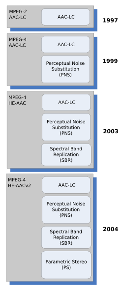
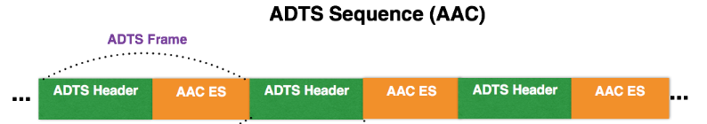
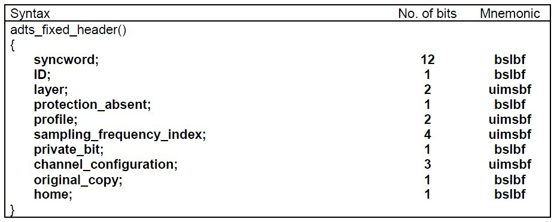
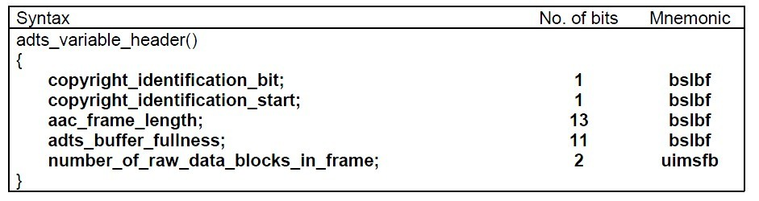

AAC音频压缩是MPEG-2及MPEG-4规范的一部分，AAC是除MP3外另一种常见的音频数据编码方式。尤其是在音视频领域，主流的音视频编码标配是H264+AAC，其中像TS、RTP、FLV、MP4都支持AAC音频编码。FAAC是开源的AAC编解码器。
AAC编码的发展历程
1988年ISO/IEC标准化组织成立了MPEG专家组来开发通用的运动图像、声音及其组合的国际标准。自1988年以来，ISO/MPEG承担了很多的音视频编码的标准化工作。
1992年末，MPEG完成了MPEG-1视频编码标准，最后被采纳为ISO/IEC IS 11172标准。与之对应的音频部分分为三种模式，从Layer-1 到Layer-3编码，音频质量逐步提高。MPEG-1 Layer-3就是我们所知的MP3。
后来MPEG-2在两方面对于MPEG-1进行了扩展（音频部分）：①对于5.1声道的支持，适应通常所谓的电影院音响效果；②增加了对于16kHz、22.5kHz、24kHz采样率的支持。同时MPEG-2保持音频编码的后向兼容性，这就是MPEG-2 BC（Back-Compatible）。
AAC首先引入是在MPEG-2标准的part 7。在发现放弃兼容性可以提高编码的效率后，MPEG便放弃了兼容性要求，并成立了一个新的工作项目，定义为AAC（Advanced Audio Coding），并于1997年形成了国际标准ISO 13818-7。AAC标准是不兼容MPEG-1的，也被称为MPEG-2 NBC。
AAC有很多新的特性。它支持从8k到96k的各种采样率，支持多种声道配置方案。与MP3相比，压缩比更高，提高了音频质量，也使AAC拥有更优异的编码质量和性能。
AAC有多种规格，其中AAC LC、AAC HE V1和AAC HE V2是常见的。
AAC LC（Low Complexity）低复杂度规格，码流128kbps，音质较好，但是码流太大了。AAC HE V1：HE是指”High Effective”，AAC HE在AAC LC的基础上增加了SBR（Special Band Replication，频段复制）。音乐的主要频谱集中在低频段，高频段幅度小但包含音质细节。但如果按高频段的编码标准编码整个频段，则输出文件过大。SBR对频谱进行切割，低频段单独编码保存主要成分，高频单独放大，保存音质。这是一种平衡。最终码流在64kbps左右。AAC HE V2：在V1的基础支持了PS（parametric stereo），参数化立体声。原来的立体声文件是双声道，文件输出是单声道的两倍。但双声道声音有相似性，只需要存储一个声道，另一个用参数进行描述。码率进一步降低，可以到48kbps甚至24kbps。

总的来说AAC编码支持8KHz-96KHz采样率范围，码率在8kbps-576kbps之间，最多支持48声道。
AAC音频数据包格式
AAC音频被支持的几种容器格式1
2
3
4
5
6① MPEG/3GPP container：
.m4a, .mp4, .3gp
② Apple container
.m4a, .m4b, .m4p, .m4r, .m4v
③ ADTS stream
.aac
互联网媒体类型：1
2
3
4
5
6
7audio/aac
audio/aacp
audio/3gpp
audio/3gpp2
audio/mp4
audio/mp4a-latm
audio/mpeg4-generi
AAC支持的封装格式：
- ADIF（Audio Data Interchange Format），必须从音频的头开始才能解码。
- ADTS（Audio Data Transport Stream），每一帧单独解码，这是我们常见的音频流封装格式。
- LATM/LOAS，其中LATM提供了为多个AAC流进行multiplexing的方法，而LOAS则用来为LATM数据包添加同步信息
本文主要涉及的是ADTS封装格式的AAC文件结构。
ADTS 帧头
如上所述，ADTS每一帧可以单独解码，因为ADTS的头部包含了音频数据的基本信息。如下所示：

每个ADTS帧都包含一个ADTS Header以及ADTS ES（Elementary Streams，原始流）。
ADTS Header一共7个字节或者9个字节（若有CRC校验），分为两部分：adts_fixed_header以及adts_variable_header，每部分分别占28个bits。
下面是ADTS Header的位解析（来源multimedia）AAAAAAAA AAAABCCD EEFFFFGH HHIJKLMM MMMMMMMM MMMOOOOO OOOOOOPP (QQQQQQQQ QQQQQQQQ)
其中adts_fixed_header部分:
| Offset | Letter | Length (bits) | Meaning | Description |
|---|---|---|---|---|
| 0 | A | 12 | syncword | 同步字，始终是 0xFFF, 代表ADTS帧的开始 |
| 12 | B | 1 | MPEG Version | 0 for MPEG-4, 1 for MPEG-2 |
| 13 | C | 2 | Layer | always 0 |
| 15 | D | 1 | Protection absent | 是否有CRC校验 |
| 16 | E | 2 | Profile | AAC规范等级，等于 [MPEG-4 Audio Object Type] - 1 |
| 18 | F | 4 | Sampling Index | 采样率索引 (15 is forbidden) |
| 22 | G | 1 | Private Bit | guaranteed never to be used by MPEG, set to 0 when encoding, ignore when decoding |
| 23 | H | 3 | Channel Configuration | 通道配置，2表示立体声 |
| 26 | I | 1 | Originality | set to 0 when encoding, ignore when decoding |
| 27 | J | 1 | Home | set to 0 when encoding, ignore when decoding |
可以看到与MP3帧类似的是，采样率、通道配置这些都是固定参数，不同的是ADTS将这些3个半字节也附加到每个帧中，这样ADTS帧的解析是没有其他依赖的。
可变部分adts_variable_header:
| Offset | Letter | Length (bits) | Meaning | Description |
|---|---|---|---|---|
| 28 | K | 1 | copyrighted id bit | the next bit of a centrally registered copyright identifier, set to 0 when encoding, ignore when decoding |
| 29 | L | 1 | copyright id start | signals that this frame’s copyright id bit is the first bit of the copyright id, set to 0 when encoding, ignore when decoding |
| 30 | M | 13 | Frame Length | ADTS帧长，包括头部及原始流，头部为7或9字节 |
| 43 | O | 11 | Buffer Fullness | 0x7FF 代表是码率可变的，VBR，0x000则是固定码率 |
| 54 | P | 2 | Number of AAC frames(RDBs) | ADTS帧中至少一个AAC的原始数据帧，因此此处是 Number of AAC frames(RDBs) in ADTS frame minus 1。一个AAC帧为1024个采样 |
| 56 | Q | 16 | CRC | CRC if protection absent is 0 |
各字段语义上如下图所示：
 
根据头部的Frame Length帧长以及是否有CRC可以计算出ADTS帧中AAC帧的长度，从而可以读出AAC原始数据帧。
一些参数
Aduio Object Type
1 | | Object Type ID | Aduio Object Type | |
Sampling frequency index:
1 | 0: 96000 Hz |
Channel Configuration:1
2
3
4
5
6
7
8
90: Defined in AOT Specifc Config
1: 1 channel: front-center
2: 2 channels: front-left, front-right
3: 3 channels: front-center, front-left, front-right
4: 4 channels: front-center, front-left, front-right, back-center
5: 5 channels: front-center, front-left, front-right, back-left, back-right
6: 6 channels: front-center, front-left, front-right, back-left, back-right, LFE-channel
7: 8 channels: front-center, front-left, front-right, side-left, side-right, back-left, back-right, LFE-channel
8-15: Reserved
Comments